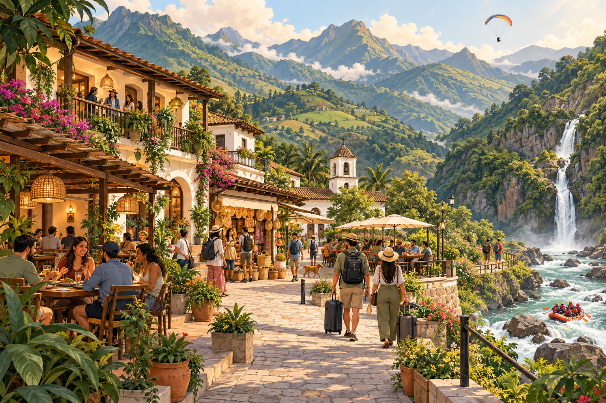

Find what inspires you.
Towns, cities, landscapes and culture: start with the destination and experiences that spark your curiosity.
Discover the place. Meet its people.
Discover destinations and find ways to experience them: where to stay, what to eat, how to get around, what to explore and where to enjoy the nightlife. Connect experiences, culture, events, shops and local services to design a trip that suits you.
Explore destinations ↗At Explorando Lugares, we aim to bring together the information you need to plan with confidence, make the most of your visit and discover what makes each place special.

Find your way to explore / 01
From the destination that inspires you to the places and services you need: explore each offering and combine what suits you, at your own pace.
Your journey starts here / 02
Three ways to start exploring Antioquia: tradition, city life and nature.
See all 21 destinations in Antioquia ↗
Images resized; framing may vary by screen. Photographs licensed under CC BY-SA retain that license.
People make the place / 03
Do you run a business, cultural space or activity in your town or city? Be part of Explorando Lugares.
Connect your business ↗Tell us what you do and where you are.
Prepare your information and photographs you have permission to use.
Let us build a local presence with confirmed information.
Leave your details so we can talk about your business.